david@dev:~$ whoami
David
Papp.
AI solution developer
Open to full-time work
Rotterdam, NL
Target rolesAI engineering, backend and data
AI solution developer
Target rolesAI engineering, backend and data
AI solution developer
Target rolesAI engineering, backend and data
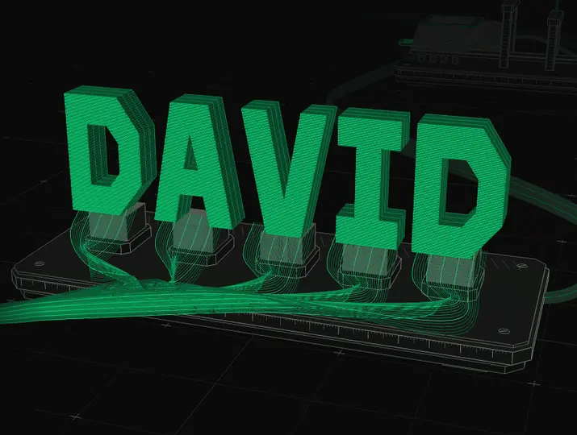
A company assistant that answers only from the text you give it, shows the exact sentence it used, and goes live only after a person approves it.
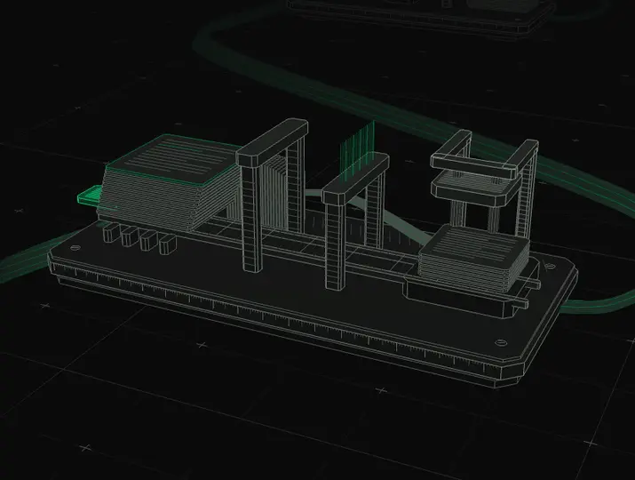
The fictional request enters the versioned source lookup.
What is the API batch limit?
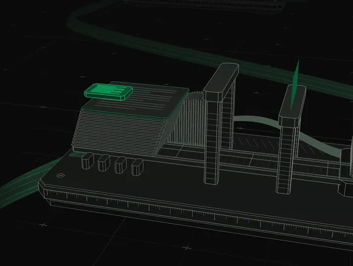
Lexical retrieval quotes the exact excerpt from source version 2.
“up to 50 records”
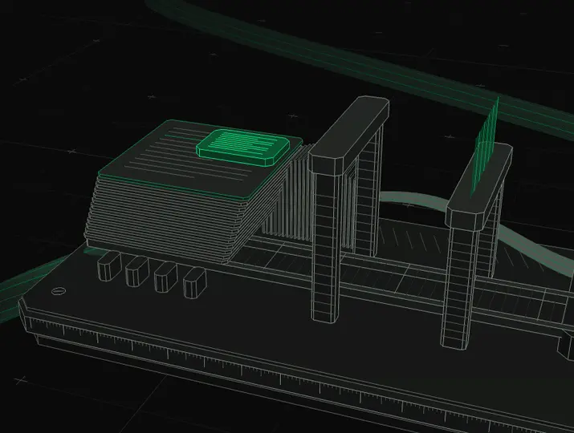
The server filters sources by audience before returning the customer view.
“up to 50 records”
Withheld
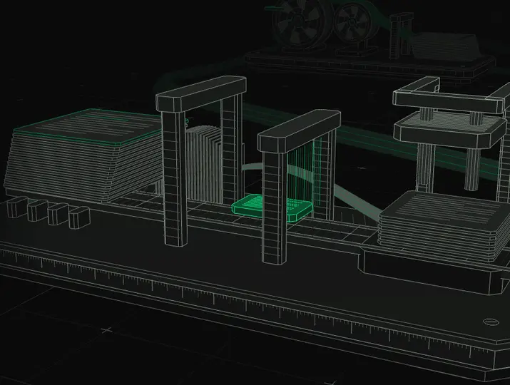
Approval and activation freeze the configuration and sources in an immutable snapshot.
Approved by a person
Sources + configuration frozen
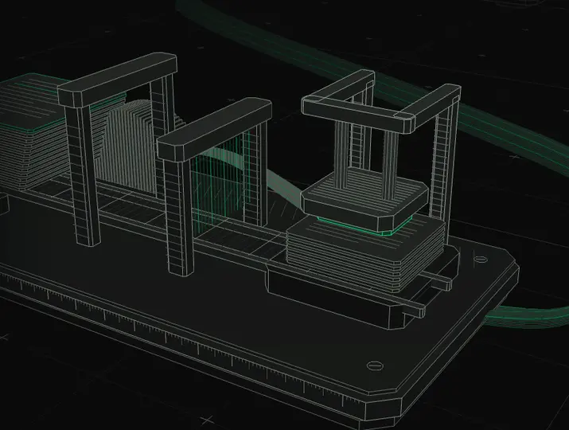
Writes are idempotent and revision-checked. A stale revision returns 409.
409 · Revision conflict
Preserved
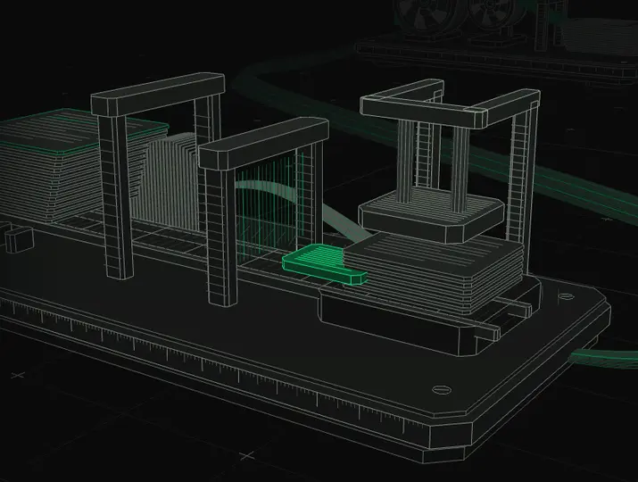
It follows a conversation transcript and puts the right reference card in front of you at the right moment, and every card names its source.
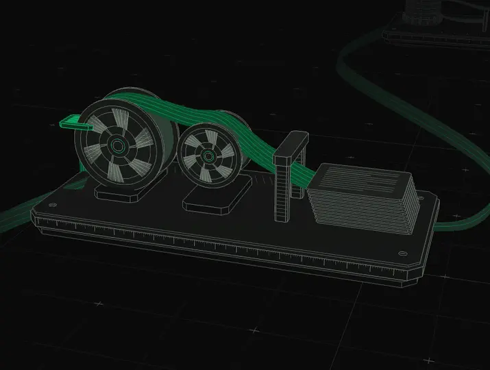
Timestamped utterances enter in order from the fictional technical_discussion scenario.
How does your API integration work? Do you support webhooks?
REST over HTTPS with OAuth2, webhooks signed with HMAC.
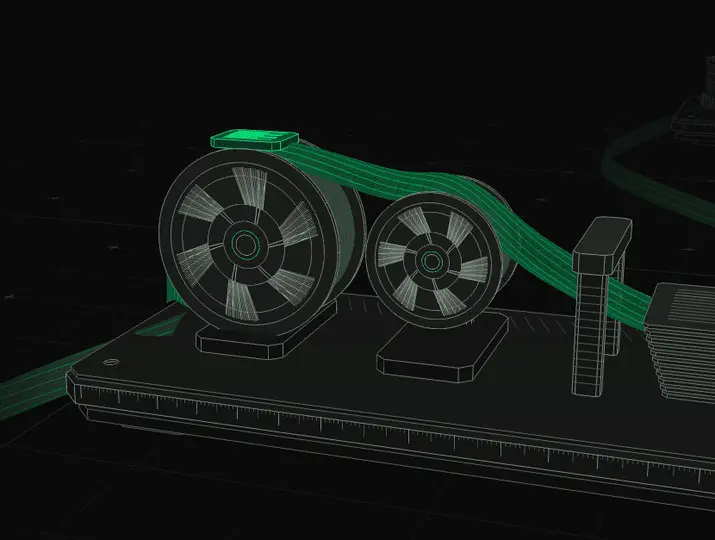
A 30-second sliding context window drops older transcript lines.
p50 is 120 milliseconds, sustained five thousand events per second.
Who is from your team should review our security questionnaire? Who is the technical contact?
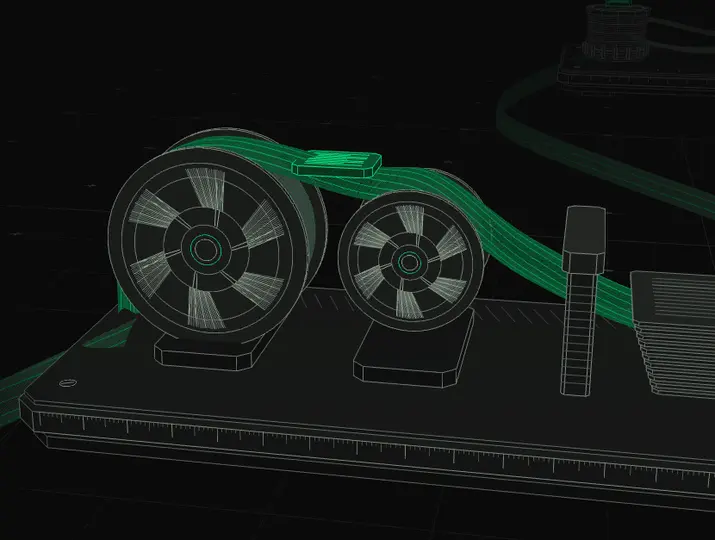
Heuristic intent classification identifies a contact lookup.
Who is from your team should review our security questionnaire? Who is the technical contact?
contact_lookup
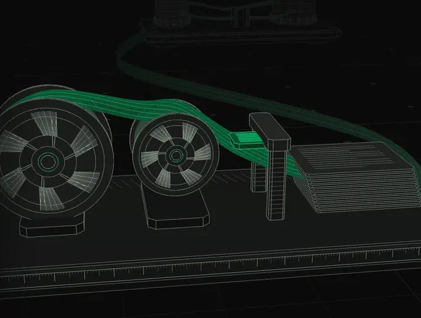
TF-IDF retrieval surfaces a reference card carrying its source title.
Marcus Chen — Solutions Engineer, our side (technical deep-dives)
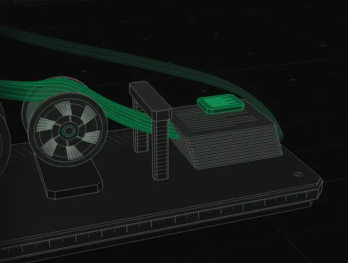
Only bullets citing a retrieved source title survive. Retrieval cards remain if the optional model step fails.
Marcus Chen — Solutions Engineer, our side (technical deep-dives)
Dropped
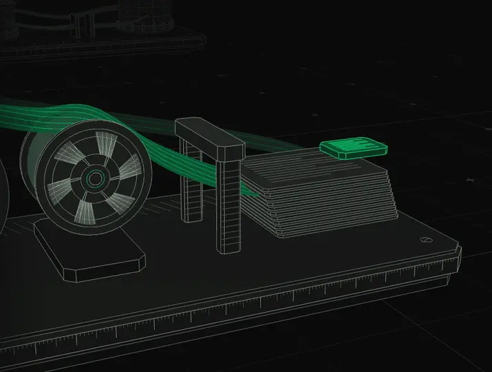
It shows why “just try again” can book the same job twice, and the fix that prevents it.
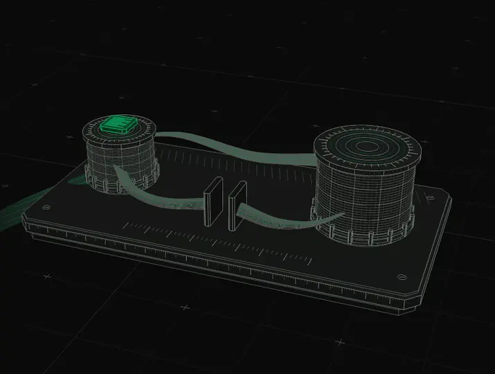
The receiver commits the visit and generates its confirmation before the reply travels back.
POST /visits · attempt 1
Committed · VIS-742
WORK-318 · Boiler inspection · 1 booking · plain receiver
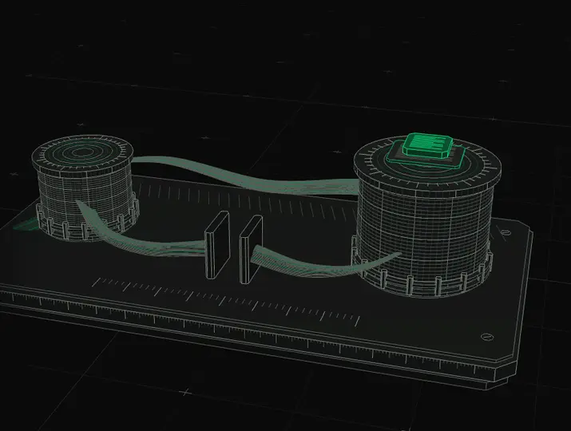
The reply drops after commit. The sender cannot tell whether the visit exists.
Committed · VIS-742
Response lost · after commit
WORK-318 · Boiler inspection · 1 booking · plain receiver
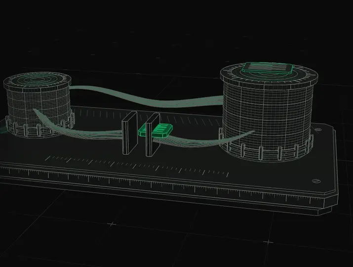
The plain receiver commits a second visit for the same operation.
Committed · VIS-743
201 received · VIS-743
WORK-318 · Boiler inspection · 2 bookings · plain receiver
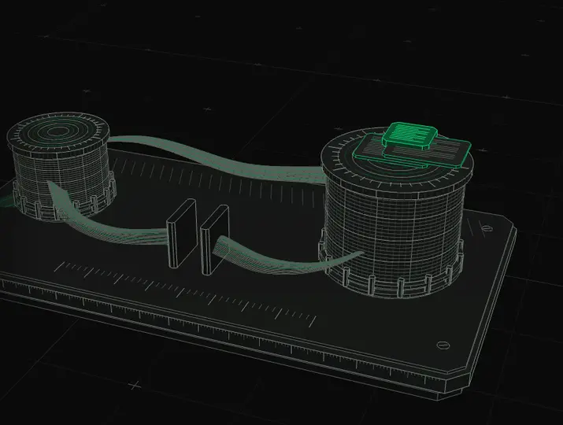
The fixed receiver stores the operation key and payload fingerprint, then replays the original receipt.
Replay stored result · VIS-742
200 received · VIS-742
WORK-318 · Boiler inspection · 1 booking · key stored
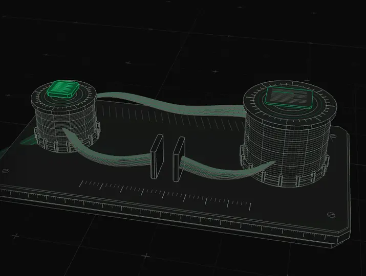
The same key with a different payload returns 409 without creating another visit.
POST /visits · attempt 3
409 · Key reused with a different payload
WORK-318 · Boiler inspection · 1 booking · key stored
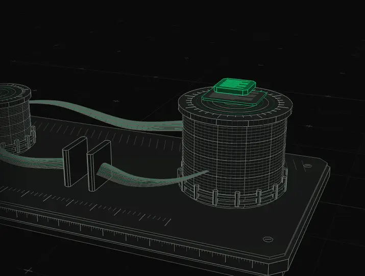
A quoted answer, a source card and a booking receipt.
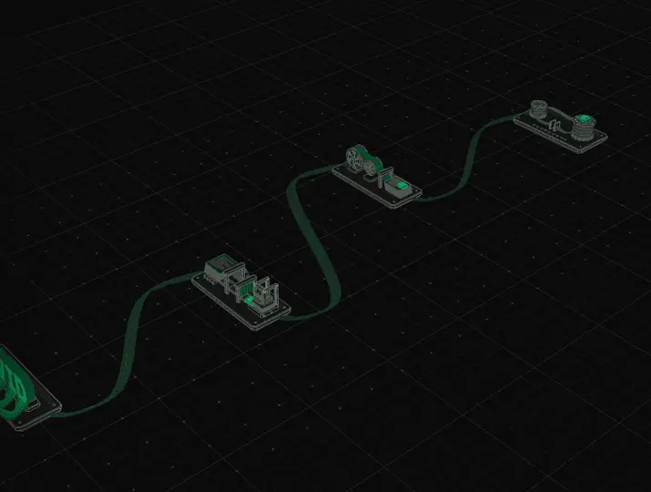